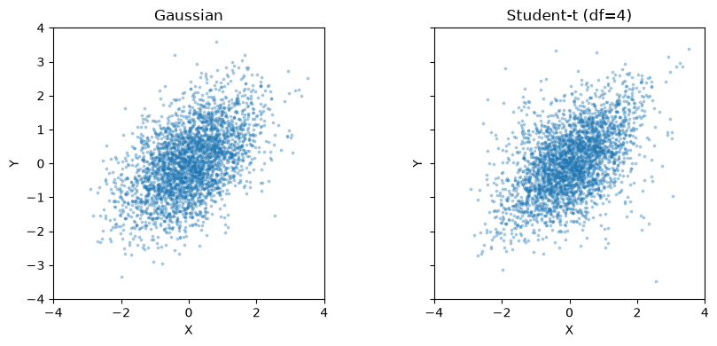
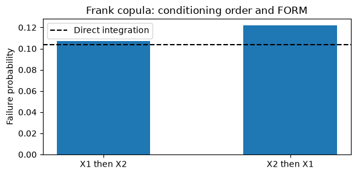

Download notebook · Download runnable bundle
Dependencies: PySTRA core.
Dependence and probability transformations#
Specify a joint distribution, compare dependence models and examine the reference coordinates used in reliability analysis.
Before you start: the introductory tutorial and cumulative distribution functions.
Problem and approach#
A joint distribution combines marginals with a copula. A transformation then supplies coordinates for the reliability calculation without changing that joint law.
We will specify and sample joint laws, compare Gaussian Nataf and Rosenblatt, reproduce Lebrun and Dutfoy’s conditioning-order example, and check generalized Student-t Nataf against an exact probability.
See the theory and User guide. The reference papers are generalized Nataf (2009) and Rosenblatt versus Nataf (2009).
[1]:
import numpy as np
import pandas as pd
import matplotlib.pyplot as plt
from scipy.stats import norm, t, expon
from scipy.integrate import quad
import pystra as ra
Specify marginals and dependence#
The matrix below is the latent Gaussian correlation or Student-t shape matrix. It is generally not the physical Pearson correlation after applying the marginals. The existing model.set_correlation(...) interface retains its physical Pearson meaning and Gaussian Nataf calibration.
Holding the normal marginals and latent matrix fixed lets us see how changing the copula changes joint extremes. Identity Student-t shape would still not imply independence.
[2]:
R = np.array([[1.0, 0.5], [0.5, 1.0]])
marginals = [ra.Normal("X", 0, 1), ra.Normal("Y", 0, 1)]
joints = {
"Gaussian": ra.JointDistribution(marginals, ra.GaussianCopula(R)),
"Student-t (df=4)": ra.JointDistribution(marginals, ra.StudentTCopula(R, df=4)),
}
fig, axes = plt.subplots(1, 2, figsize=(9, 4), sharex=True, sharey=True)
for ax, (name, joint) in zip(axes, joints.items()):
sample = joint.rvs(3000, seed=2026)
ax.scatter(*sample.T, s=3, alpha=0.3)
ax.set(title=name, xlabel="X", ylabel="Y", xlim=(-4, 4), ylim=(-4, 4))
ax.set_aspect("equal")
fig.tight_layout()
plt.show()
pd.DataFrame(
{
name: {
"density at (1, 1)": joint.pdf([1, 1]),
"CDF at (0, 0)": joint.cdf([0, 0]),
}
for name, joint in joints.items()
}
).T

[2]:
| density at (1, 1) | CDF at (0, 0) | |
|---|---|---|
| Gaussian | 0.094354 | 0.333333 |
| Student-t (df=4) | 0.106205 | 0.333323 |
Figure. Samples with identical normal marginals show different joint patterns for Gaussian, Student-t and Frank copulas; marginal distributions alone do not specify dependence.
Transform and recover physical points#
For a Gaussian copula, canonical Rosenblatt and Cholesky Nataf are the same mapping. jacobian_u_wrt_x(u, x) returns \(\partial u/\partial x\), and jacobian_x_wrt_u(u, x) its inverse. Joint transformation methods take one vector; distribution methods accept rows of points. Copula-level Rosenblatt methods instead work on uniform coordinates.
[3]:
joint = joints["Gaussian"]
nataf = joint.make_transformation("nataf")
rosenblatt = joint.make_transformation("rosenblatt")
x = np.array([1.2, -0.3])
u = nataf.x_to_u(x)
np.testing.assert_allclose(u, rosenblatt.x_to_u(x), atol=1e-12)
np.testing.assert_allclose(nataf.u_to_x(u), x, atol=1e-12)
J = nataf.jacobian_u_wrt_x(u, x)
np.testing.assert_allclose(joint.pdf(x), np.prod(norm.pdf(u)) * abs(np.linalg.det(J)))
print("Physical point:", x, "Normal point:", u)
print("du/dx:\n", J)
Physical point: [ 1.2 -0.3] Normal point: [ 1.2 -1.03923048]
du/dx:
[[ 1. 0. ]
[-0.57735027 1.15470054]]
Reproduce the conditioning-order benchmark#
Lebrun and Dutfoy (2009, Section 6) use exponential marginals with rates 1 and 3 and failure event
For a Frank copula with \(\theta=10\), FORM gives approximately 0.107 in order \((X_1,X_2)\) and 0.122 in the reverse order. Exact probability is order-invariant; the first-order tangent approximation is not. The Gaussian copula with latent correlation 0.5 provides a comparison where orthogonal changes of normal coordinates preserve the optimum FORM result.
[4]:
def exponential_model(copula):
return ra.StochasticModel(
ra.JointDistribution(
[
ra.ScipyDist("X1", expon(scale=1)),
ra.ScipyDist("X2", expon(scale=1 / 3)),
],
copula,
)
)
rows = []
for name, copula in [("Gaussian", ra.GaussianCopula(R)), ("Frank", ra.FrankCopula(10))]:
choices = [("rosenblatt", [0, 1]), ("rosenblatt", [1, 0])]
if name == "Gaussian":
choices.insert(0, ("nataf", None))
for method, order in choices:
options = ra.FORMOptions(transform=method, rosenblatt_order=order)
form = ra.FORM(
model=exponential_model(copula),
options=options,
limit_state=ra.LimitState(lambda X1, X2: 8 * X1 + 2 * X2 - 1),
)
form_result = form.run()
assert form_result.converged
rows.append(
{
"Copula": name,
"Method": method,
"Order": str(order),
"Beta": form_result.design_index,
"FORM Pf": form_result.failure_probability,
}
)
results = pd.DataFrame(rows)
np.testing.assert_allclose(
results.loc[results.Copula == "Frank", "FORM Pf"], [0.107, 0.122], atol=0.00015
)
results
[4]:
| Copula | Method | Order | Beta | FORM Pf | |
|---|---|---|---|---|---|
| 0 | Gaussian | nataf | None | 1.295457 | 0.097581 |
| 1 | Gaussian | rosenblatt | [0, 1] | 1.295457 | 0.097581 |
| 2 | Gaussian | rosenblatt | [1, 0] | 1.295457 | 0.097581 |
| 3 | Frank | rosenblatt | [0, 1] | 1.242811 | 0.106969 |
| 4 | Frank | rosenblatt | [1, 0] | 1.165320 | 0.121945 |
We can integrate out \(X_2\) using the Frank conditional CDF. This gives an independent numerical reference for the event probability:
The plotted differences are FORM approximation errors, not changes to the specified distribution.
[5]:
frank = ra.FrankCopula(10)
def integrand(x):
p = [-np.expm1(-x), -np.expm1(-3 * (1 - 8 * x) / 2)]
return np.exp(-x) * frank.rosenblatt(p)[1]
exact, quadrature_error = quad(integrand, 0, 1 / 8)
assert abs(exact - 0.1038) < 0.00005
print(
f"Integrated Pf = {exact:.6f}; quadrature error estimate = {quadrature_error:.1e}"
)
fig, ax = plt.subplots(figsize=(6, 3))
frank_results = results[results.Copula == "Frank"]
ax.bar(["X1 then X2", "X2 then X1"], frank_results["FORM Pf"], width=0.5)
ax.axhline(exact, color="black", linestyle="--", label="Direct integration")
ax.set(ylabel="Failure probability", title="Frank copula: conditioning order and FORM")
ax.legend()
fig.tight_layout()
plt.show()
Integrated Pf = 0.103839; quadrature error estimate = 5.6e-10

Figure. Frank-copula FORM probabilities change with conditioning order; the horizontal direct-integration reference represents the unchanged physical event.
Generalized Student-t Nataf: an exact half-space check#
Choose Student-t marginals matching the copula’s degrees of freedom. The joint law is then multivariate Student-t. For \(g=3-X-Y\) and unit marginal scales,
Generalized Nataf makes this event affine in spherical Student-t coordinates, so its FORM result is exact up to solver tolerance. These coordinates have identity shape, not independent components or unit covariance. get_equivalent_beta() converts the resulting probability to the conventional normal index.
[6]:
student_joint = ra.JointDistribution(
[ra.ScipyDist("X", t(4)), ra.ScipyDist("Y", t(4))], ra.StudentTCopula(R, df=4)
)
options = ra.FORMOptions(transform="nataf")
form = ra.FORM(
model=ra.StochasticModel(student_joint),
options=options,
limit_state=ra.LimitState(lambda X, Y: 3 - X - Y),
)
form_result = form.run()
beta_exact = 3 / np.sqrt(2 + 2 * R[0, 1])
pf_exact = t.sf(beta_exact, 4)
np.testing.assert_allclose(form_result.failure_probability, pf_exact, rtol=2e-6)
pd.Series(
{
"Geometric beta (Student-t space)": form_result.design_index,
"Normal-equivalent beta": form_result.beta,
"FORM Pf": form_result.failure_probability,
"Exact Pf": pf_exact,
}
)
[6]:
Geometric beta (Student-t space) 1.732051
Normal-equivalent beta 1.410804
FORM Pf 0.079151
Exact Pf 0.079151
dtype: float64
Choose the standard space for the analysis#
An explicit Gaussian copula defaults to Nataf; Student-t and Frank default to normal Rosenblatt. System FORM, SORM, simulation methods and the strong maximum test currently require independent normal coordinates. Select Rosenblatt for these analyses with a non-Gaussian copula.
The following system has nested failure events, \(X>3\) and \(X>4\), so the series probability is exactly \(P(X>3)\). This checks the shared transformation used by the component analyses.
[7]:
normal_margin_student = ra.StochasticModel(joints["Student-t (df=4)"])
system = ra.SeriesSystem(
[
ra.Component("threshold_3", lambda X: 3 - X),
ra.Component("threshold_4", lambda X: 4 - X),
]
)
system_form = ra.SystemFORM(normal_margin_student, system)
system_form_result = system_form.run()
np.testing.assert_allclose(system_form_result.failure_probability, norm.sf(3), rtol=1e-5)
print("Standard space:", system_form_result.component_results["threshold_3"].standard_space)
print("System Pf:", system_form_result.failure_probability)
Standard space: normal
System Pf: 0.0013498980316286287
Continuous marginals and positive-definite elliptical shape matrices are required. Frank is currently bivariate with \(|\theta|\leq30\). Copula fitting and Pearson calibration for non-Gaussian copulas are not included. Finite precision limits extreme conditional probabilities; an unresolved transform raises rather than silently clipping coordinates.
For a practical component diagnostic, continue with the strong maximum test tutorial.
Continue with Rosenblatt ordering in system reliability for a worked reproduction of Meinen and Steenbergen (2025), including transformation geometry, consistent component coordinates, and direct probability checks.
Continue: User guide · API reference · Theory